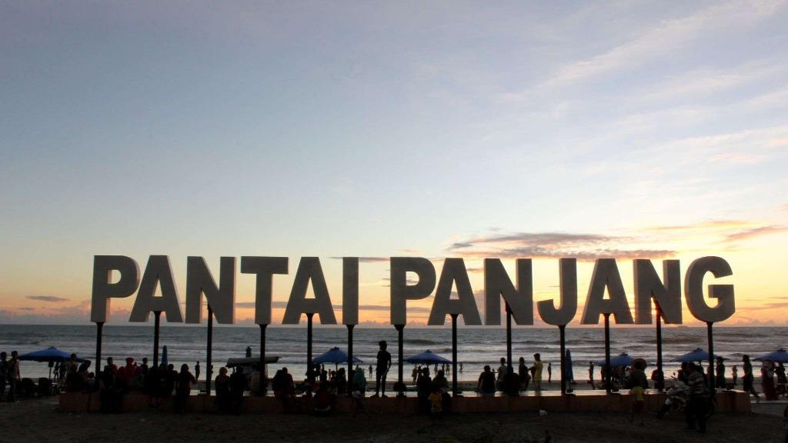

📍 Kota Bengkulu
COASTALERT
Pantai Panjang, Pasar Bengkulu, Teluk Segara — banyak kawasan pesisir kita sudah rutin terdampak banjir rob dan abrasi. CoastAlert hadir untuk memudahkan warga dan pemerintah memantau kondisi tersebut lewat peta yang bisa diakses siapa saja.
Peta Interaktif
Lihat titik-titik rawan rob dan abrasi di seluruh pesisir Bengkulu. Klik titik di peta untuk melihat detailnya.
Statistik
Data rekap jumlah titik rawan, tinggi rob rata-rata, dan tren perubahan per tahun per kecamatan.
Lapor Kejadian
Lihat rob atau abrasi di sekitar rumah Anda? Laporkan di sini — dilengkapi foto dan titik lokasi.
CoastAlert